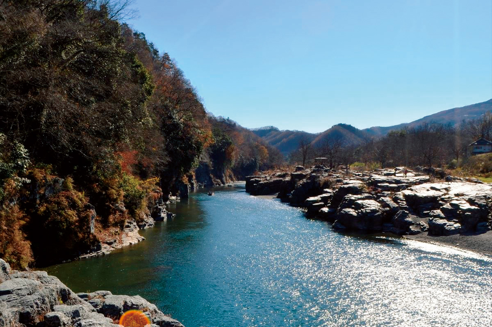
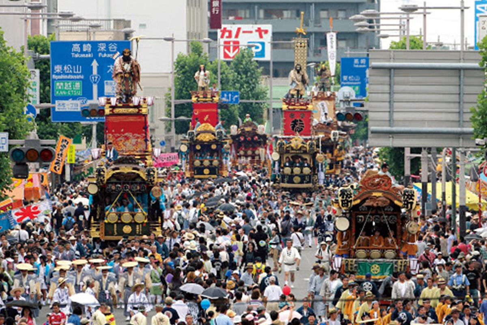
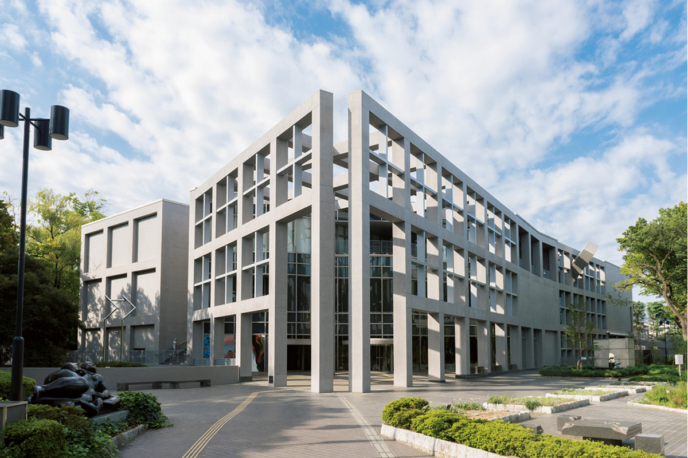
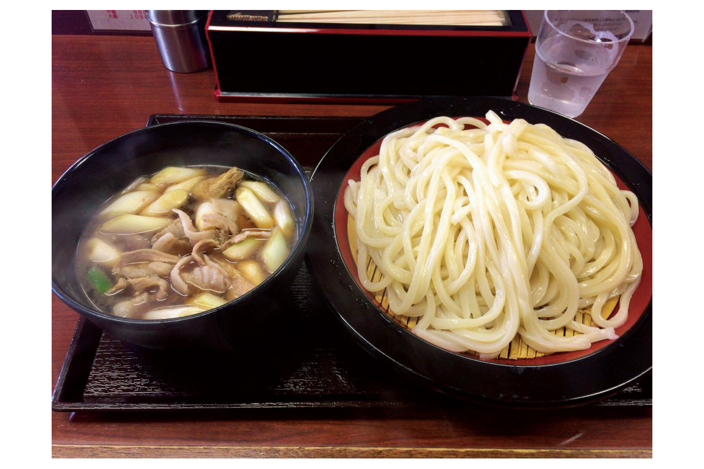
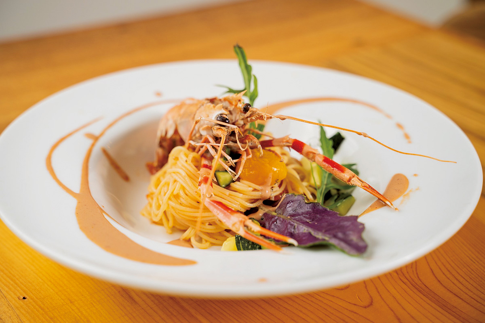
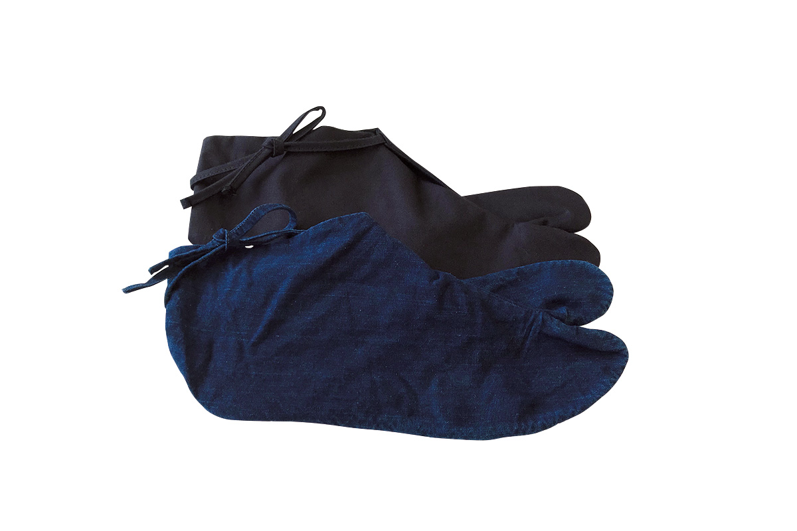
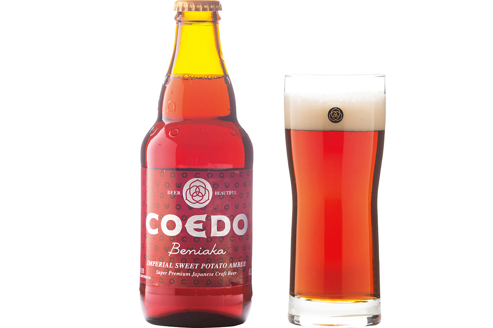

Префектура Сайтама
Сайтама: каменные плиты Нагаторо, толстая лапша и куклы для весеннего праздника

Река широко разливается между слоистыми каменными плитами, над водой нависают зелёные деревья и скалы.
Край, который днём кормит Токио своими поездами, а вечером отдаёт путешественнику слоистые скалы, старый город купцов и пиво на местном батате. Рассказываем, за чем ехать в Сайтаму.
О префектуре
Зелёный пояс вокруг столицы
Сайтаму образуют зелёное плато Мусасино и горный массив Окутитибу, и отсюда её название, край узоров. Имя это старое: в нераской поэтической антологии Манъёсю его записывали как Сакитама, а в словаре середины эпохи Хэйан как Сайтама. Здесь же много стоянок неолита и курганов, в том числе группа курганов в Гёде.
Географически и хозяйственно край тесно связан с Токио: Урава, Омия и новый центр Сайтама составляют часть столичной агломерации, откуда люди каждый день едут на работу в Токио. При этом рядом лежат Кавагоэ со старыми торговыми домами, Кумагая, которую зовут самым жарким городом страны, и Титибу с Нагаторо, куда ходит экспресс с красной стрелой на носу.
В 2019 году в прокате с успехом прошла комедия о Сайтаме, и после этого внимание к краю выросло: о нём заговорили иначе, а сами жители стали замечать то, что раньше не считали достопримечательностью.
Что посмотреть
Каменные плиты, сложенные рекой
Каменные плиты Нагаторо
Река Аракава сама сложила этот пейзаж: она промыла мягкие слои и оставила ступени из крепкого камня, поэтому берег выглядит как огромная каменная кладка, спускающаяся к воде. Около ста лет назад это место объявили живописным местом и природным памятником страны.
- Справки
- туристическая ассоциация посёлка Нагаторо
- Телефон
- +81 494-66-3311
Что ещё посмотреть
- Улица складов в Кавагоэ, дома купцов с толстыми стенами
- Аллея сосен в Соке, старая дорожная аллея
- Парк детских сказок, домики среди деревьев
Праздники
Повозки со скульптурами
Праздник вееров в Кумагае
Это главный обряд местного святилища, и по городу идут двенадцать украшенных повозок под звуки здешней музыки. За пышность праздник зовут здешним Гионом, то есть самым большим в регионе Канто: наверху повозок стоят вырезанные фигуры, а борта затянуты тканью с узором.

- Период
- с 20 по 22 июля
- Место
- святилище Атаго-Ясака и центр Кумагаи, Сайтама
Другие праздники
- Праздник в Кавагоэ, шествие с повозками старого города
- Ночной праздник в Титибу, зимний обряд с огнями
- Летний праздник в Коносу, городская ярмарка с музыкой
Музеи и архитектура
Первый музей архитектора
Художественный музей префектуры Сайтама
Здание спроектировал Курокава Кисё, автор Национального художественного центра в Токио и аэропорта Куала-Лумпура, и именно этот музей стал его первой работой такого рода. Дом собран как набор поставленных друг на друга кубов, наружное стекло выгнуто, а высоту специально удержали невысокой, чтобы не спорить с аллеей деревьев вокруг.

- Адрес
- 9-30-1 Tokiwa, Urawa, Saitama
- Телефон
- +81 48-824-0111
Что ещё посмотреть
- Вокзал в Фукае, новое здание из красного кирпича
- Внешний водоотводный канал, подземный зал с колоннами
- Мемориальный музей Тонии, старая усадьба с садом
Местная кухня
Лапша, которую макают в мясной бульон
Удон из Мусасино
В префектуре больше двадцати своих видов лапши, и главный из них, это удон из Мусасино. Его подают отдельно от бульона: лапша здесь толстая и упругая, а к ней приносят горячую чашку с мясом и зелёным луком, куда её и окунают перед тем, как съесть.

Что ещё попробовать
- Кавадзима суттатэ, жареная мелкая рыба из реки
- Мисо с картофелем, печёный картофель под сладкой пастой
- Адзуки сукуи, рис с фасолью адзуки
Где поесть
Овощи со своего огорода
Ресторан «Кучина Сальве»
Здесь предлагают новый взгляд на здешнюю кухню: местные продукты из Титибу собирают в итальянские блюда. Овощи выращивают сами, без удобрений, и за год с огорода берут больше ста пятидесяти сортов, поэтому меню меняется вместе со временем года.

- Адрес
- 17-14 Bamba-cho, Chichibu, Saitama
- Телефон
- +81 494-22-6227
- Часы
- с 17:00 до 22:00, по выходным также с 11:00 до 14:00
- Выходные
- среда и четверг
- Сайт
- salvagest.jp
Ремёсла
Таби, сшитые вручную
Таби из Гёды
В городе Гёда шьют таби, то есть носки с отделённым большим пальцем, и это ремесло признано традиционным промыслом страны. Мастерская работает с 1929 года, а для гостей здесь устраивают показ, где видно, как из полотна и подошвы собирается пара. На визит нужно записаться заранее.

- Телефон
- +81 48-556-6361
Что привезти
Пиво на фиолетовом батате
Пиво «Бэниака» завода KOEDO
Варят его по способу, который передал немецкий пивовар, и делают на местном красном батате бэниака, поэтому напиток получается медово-рыжим. Завод известен и другим: вместе с NEC он разбирает по параметрам цвет, аромат и вкус разных поколений, чтобы варить пиво будущего. Бутылка 333 миллилитра стоит 419 иен.

- Телефон
- +81 570-018-777
- Сайт
- coedobrewery.com
Где остановиться
Двести лет одной семьёй
Дом Мураками в Огано
Это фермерский дом, которому больше двухсот лет, и его перестроили в гостиницу для путешественников. Внутри сохранили всё, по чему узнают старый дом: открытый очаг с подвешенным котлом и купель, которую топят снизу, поэтому здесь можно пожить так, как жили в деревне.
- Адрес
- 510 Nagaru, Ogano, Chichibu, Saitama
- Телефон
- +81 494-75-4060
- Комнат
- 6
- Цена
- от 16 000 иен за ночь с двумя приёмами пищи, налоги включены, банный сбор отдельно
- Сайт
- miyamotoke.jp
Местный диалект
Как здесь говорят «очень вкусно»
- умакуттэ оттамагэта ёочень вкусно
- уттяттявыброси
- дайдзивсё в порядке
- эракаттаруиочень устал
Рекорды
В чём Сайтама первый
- №1 производство кукол для праздника девочек: первое место в стране
- №1 курган Марухакаяма: самый большой круглый курган в стране
- №1 число ясных дней: первое место
- №1 доля расходов на образование в бюджете: первое место за 2018 год
Вопросы и ответы
Что ещё спрашивают о Сайтаме
Какой обряд, придуманный в Вараби, разошёлся по всей стране?
Обряд совершеннолетия. Молодёжная организация Вараби устроила его в 1946 году, чтобы поддержать ровесников после окончания войны, и в самом городе до сих пор держатся старого названия церемонии.
Как называется местная котлета, которую делают без мяса?
Дзэрифурай. Это закуска из большого количества окары вместе с овощами, и она известна уже с конца эпохи Мэйдзи. Форма у неё была как у монеты, поэтому её сначала звали «монетной котлетой», а уже потом название переиначили в нынешнее.
Справочник
Сайтама в цифрах
Общие сведения
| Административный центр | Сайтама |
| Муниципалитеты | 40 городов, 22 посёлка, 1 деревня |
| Площадь | 3798 кв. км |
| Население | 7,33 млн человек |
| Плотность населения | 1930,1 человека на кв. км |
| Туристов в год | 42,8 млн |
| Дерево префектуры | дзельква |
| Цветок префектуры | первоцвет |
| Птица префектуры | белогрудый голубь |
Климат
| Средняя температура | +16,4 |
| Максимум | +34,5 |
| Минимум | минус 1,2 |
| Осадки | 1056 мм |
| Ясных дней | 47 |
| Дождливых дней | 86 |
| Снежных дней | 4 |
Для путешественника
| Онсэнов | 25 |
| Гостиниц и рёканов | 725 |
| Музеев искусств | 17 |
| Музеев | 68 |
| Митиноэки, придорожных станций | 20 |
| Национальное сокровище | храм Канги-ин Сётэн-дзан |
| Важных культурных ценностей | 80, из них 5 национальных сокровищ |
| Исторических мест | 22 |
| Живописных мест | 3 |
| Природных памятников | 16 |
| Национальные парки | Титибу-Тама-Кай |
Природные памятники
- Белогрудый голубь, редкая птица здешних полей
- Зеркальная скала Отаки, гладкая скала необычного вида
- Роща первоцветов на Тадзимагахара, место цветения редких растений
- Большое дерево торрея в Ёно, старое хвойное у дороги
- Нагаторо, каменные плиты и река